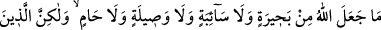
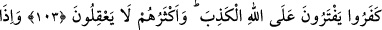
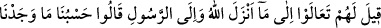
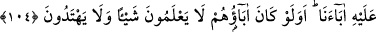
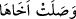
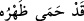

MÜŞRİKLERİN BÂTIL İNANÇ
VE MUÂMELELERİNDEN BÂZILARI
103. Allah bahîra, sâibe, vasîle ve hâm diye bir şey (meşru) kılmamıştır. Fakat
kâfirler, yalan yere Allah’a iftira etmektedirler ve onların çoğunun akılları ermez.
104. Onlara, “Allah’ın indirdiğine ve Rasûl’e gelin” denildiği vakit, “Atalarımızı
üzerinde bulduğumuz (yol) bize yeter” derler. Ya ataları hiçbir şey bilmiyor ve
doğru yol üzerinde bulunmuyor idiyse?
“Allah bahîra, sâibe, vasîle ve hâm diye bir şey (meşru) kılmamıştır.”
Yani Allah böyle bir şeyi meşru kılmadı, kanun olarak koymadı ve böyle bir esas
bildirmedi demektir.
Bahîra: “Yarmak” anlamındaki “bahr” kökünden gelir. Cahiliyye Arapları bu kelimeyi
kulağı yarılan hayvan için kullanmışlardır. Eğer bir deve beş defa doğurur da beşinci
yavrusu erkek olursa, o devenin kulağını yararlar, ona binmeyi ve onun sütünü sağmayı
yasaklarlardı. İstediği yerden suyunu içer, istediği yerde otlardı.
Sâibe: “İstediği yere gitmek” anlamındaki “seyb” kökünden gelir. İstediği yere gitmek
üzere serbest bırakılan hayvan demektir. Bir kişi “Eğer seferden dönersem, ya da
hastalıktan şifa bulursam dişi devem “sâibe olsun” der ve adağının gerçekleşmesi
durumunda hayvanı serbest bırakırdı. Bahîre gibi ondan herhangi bir istifadede
bulunmayı haram kabul ederdi.
Vasîle: Araplar koyun dişi yavru doğurursa onu kendilerine alırlar erkek yavru
doğurursa ilahlarına (putlara) adarlardı. Fakat eğer koyun, biri dişi ve biri erkek olmak
üzere ikiz yavrularsa “__WORD__” “Dişi yavru, erkek kardeşine yetişti.” derler ve dişi
olanın hatırına erkek olanı ilahlarına kurban etmezlerdi.
Buna göre âyetin mânâsı şöyle olmaktadır: Allah, dişi yavruyu, tek başına doğsaydı
haram sayıp, ilahlara kurban edilecek olan erkek yavruyu dişi ile beraber doğduğunda
helâl saymak gibi bir şeyi meşru kılmamıştır.
Hâm: Meneden, koruyan anlamındadır. Araplar eğer bir erkek devenin dölünden on
batın doğarsa onun için artık “__WORD__” “sırtını korudu” derler ve o deveye
binilmez, yük yüklenmez, herhangi bir sudan ya da otlaktan menedilmezdi.